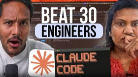

AI 编程 7 集
同时属于
来自
时间
PM 如何用 Claude 把生产力提升 10 倍：全栈实战
我认为这是大多数 PM 投入不足的一层,正是这一层让 Claude 从一个通用的聊天机器人变成真正了解你
Jyothi Nookula

用 AI 武装技术型 PM：Codex 工作流全解析
因为有了 AI，你不再需要害怕创办公司了，因为 AI 可以为你处理所有的文书工作，为你处理所有的会计工作
领域多年的内容创作者
Gusto CTO 的极简实验:5 人 10 周凭感觉编程造出 AI 产品
我们把一切都归零了。我们没有会议,没有技术规格,没有 Figma。我们没有用来追踪故事或工作的 Jira
Eddie Kim · Gusto CTO
AI 时代的产品团队：Laurel CPO 的公司操作系统与「超级个体」实战
我认为这是公司最挣扎的事情，也就是你有这些人，他们是这 1% 的 AI 用户。他们在修补他们的工作流程，
Laurel CPO
当代码量暴涨8倍:Anthropic工程负责人谈AI时代的团队重构
对于任何你知道存在恐惧的事情,我的建议是拥抱它并问自己,好吧,有什么我能做的吗,什么在我的控制范围内。
Fiona Fung · 工程负责人
Dan Shipper 的未来工作预测：别等 AI 末日，用 Codex 重塑一切
我认为 SaaS 末日论是愚蠢的。
Dan Shipper · Every CEO
非技术 PM 的 AI 独立开发术：从 Cursor 到「智能体同行评审」
如果人们离开时觉得你多么了不起，你就失败了。如果人们离开后打开他们的电脑并开始构建，你就成功了。
Zevi Arnovitz